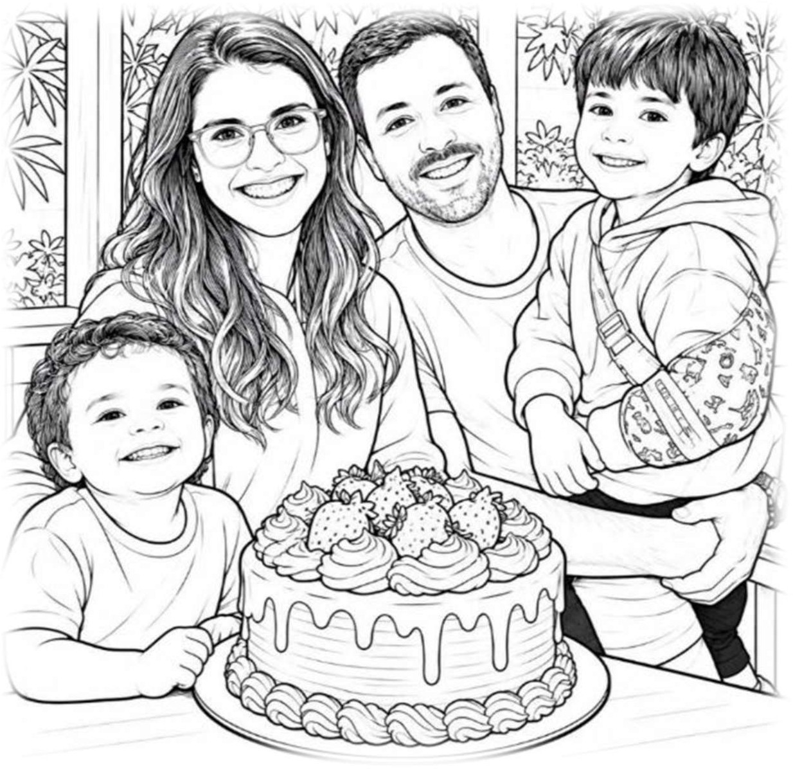

Receitas que alimentam o coração

“Stephanie, Beto, Fillippo e Bruno sabem que as receitas da Bisa Zelinda têm um sabor especial: são preparadas com mãos talentosas, muita alegria e uma fé que ilumina toda a família. Um legado de amor que merece ser guardado para sempre!”
Este Merengue de Morango traz aquela combinação perfeita de suspiros crocantes, creme de coco, morangos frescos e o toque especial de
coco em fruta com chantilly. Uma verdadeira obra-prima da confeitaria caseira!
Ingredientes
1 kg de suspiro
1 caixa de morango grande 1 vidro de leite de coco
A mesma medida (do vidro de leite de coco) de leite de vaca
1 lata de creme de leite (sem soro)
2 colheres de farinha de trigo
1 pacotinho de coco ralado Sococo 3 colheres de sopa de açúcar
1 kg de coco ralado em fruta
Chantilly para cobrir (siga as instruções da embalagem, aproximadamente 4 caixas de Chantilly)
Modo de preparo
A Base de Suspiros: Coloque o suspiro num refratário (pirex) e ajeite-o bem no fundo.
O Creme Especial: Em uma panela, misture o leite de coco, a mesma medida de leite de vaca, as 2 colheres de farinha de trigo, as 3 colheres de açúcar e o pacotinho de coco Sococo. Leve ao fogo mexendo sempre até engrossar. Deixe esfriar e, quando estiver quase frio, incorpore a lata de creme de leite sem soro.
A Montagem das Camadas: Despeje esse creme preparado por cima dos suspiros no refratário. Em cima do creme, faça uma camada com o coco em fruta.
Os Morangos: Cubra com todos os morangos devidamente lavados, cortados e bem escorridos (reserve alguns inteiros ou fatiados para a decoração final).
A Cobertura de Chantilly: Cubra tudo com uma camada generosa de Chantilly preparado e finalize polvilhando mais coco em fruta por cima. Leve à geladeira antes de servir bem geladinho!